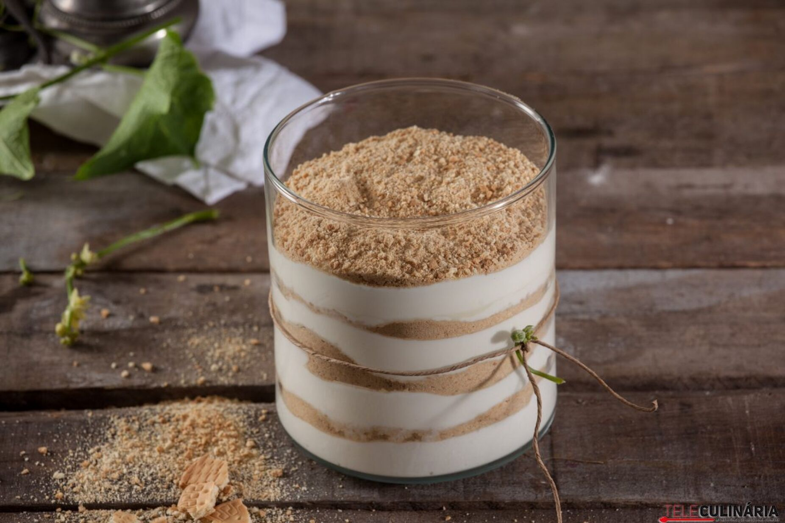

Serradura

Descrição
A Serradura, também conhecida como pudim de serradura ou pudim de Macau, é uma sobremesa portuguesa muito conhecida.
Popular tanto em Portugal como em Macau, bem como em Goa, com uma aparência em camadas alternando entre chantilly e biscoito Marie esfarelado.
Ingredientes
- Bolacha Maria
- Natas Frescas
- Leite Condensado
Passos
- Triture a bolacha maria e reserve.
- Bata as natas frescas até obter picos firmes.
- Adicione o leite condensado e envolva bem.
- Em taças ou copos de vidro, disponha uma camada de bolacha triturada e uma de natas, até chegar ao topo.
- Leve ao frigorífico por 4 horas para consolidar.
- Antes de servir decore com mais bolacha maria em pedaços.
Voltar ao Início